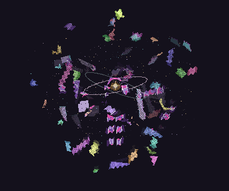

Aru · Fractured continuity
Orbiting fragments and irregular whole-wing flashes · 64 frames · 5.12-second loop

The GIF uses a dark background for easy phone playback. The sprite sheet retains transparency and the original colors.
Aru’s lore